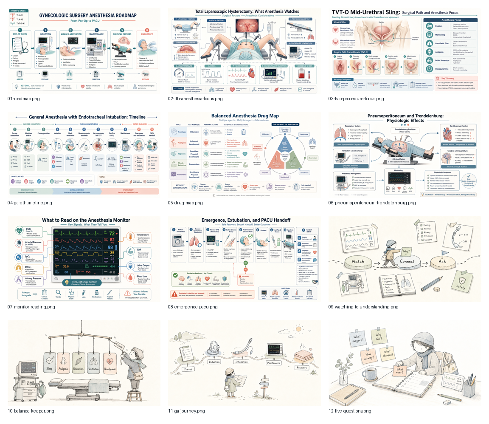
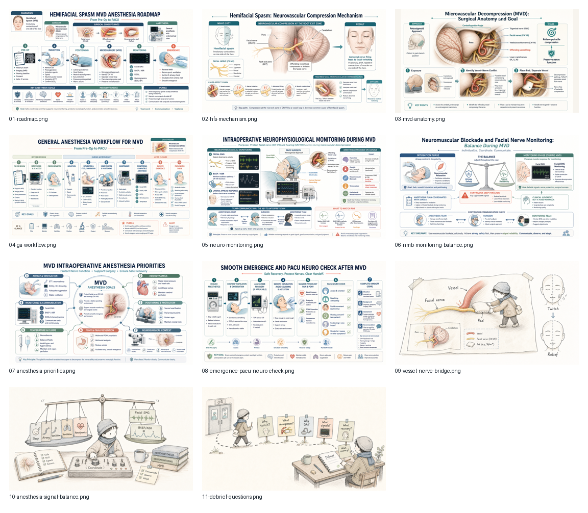
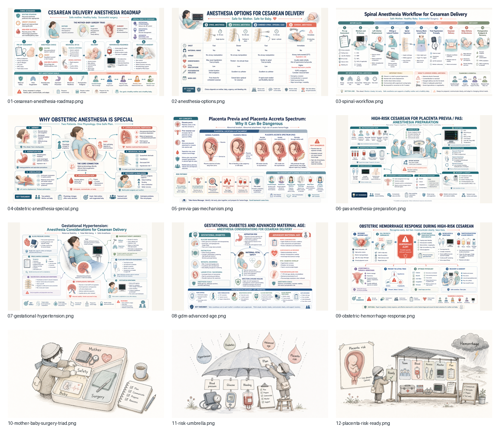

Gynecologic Surgery Anesthesia
A guided observation module for total laparoscopic hysterectomy and TVT-O, focused on general anesthesia, airway management, drug roles, monitoring, emergence, and PACU handoff.
Clinician-led · AI-assisted · Open learning
These bilingual HTML modules were created for an early medical learner: a first-year Cornell University student interested in anesthesiology. The goal is practical and modest: make the first look into the operating room less abstract, more visual, and easier to discuss.
Each module opens directly in the browser. The standalone versions embed all images, so they are suitable for GitHub Pages hosting and simple sharing.
Beginner-facing guides that show what the learner should notice before induction, during surgery, and at emergence.
Three teaching sets explain gynecologic surgery, HFS / MVD neuroanesthesia, and cesarean / high-risk obstetric anesthesia.
Each course combines Chinese-English explanations, medical infographics, hand-drawn concept figures, and debrief prompts.

A guided observation module for total laparoscopic hysterectomy and TVT-O, focused on general anesthesia, airway management, drug roles, monitoring, emergence, and PACU handoff.

A neuroanesthesia module for microvascular decompression, introducing facial nerve compression, general anesthesia, neurophysiological monitoring, neuromuscular blockade balance, and smooth emergence.

A module on cesarean anesthesia options, spinal workflow, high-risk placenta previa / PAS, hemorrhage preparation, gestational hypertension, gestational diabetes, and advanced maternal age.
The workflow is intentionally practical. Clinical context comes first; AI helps with structure, visuals, and packaging; final use still depends on human review.
Each module begins with an actual case or observation day, then turns it into a learner-friendly roadmap.
Medical infographics explain anatomy, workflow, monitoring, and risk. Hand-drawn illustrations help beginners remember the idea.
Standalone HTML pages embed the images, so learners can open them from a link without installing software.
This project is for learning, discussion, and visibility around practical anesthesia education. It is not a clinical protocol library.